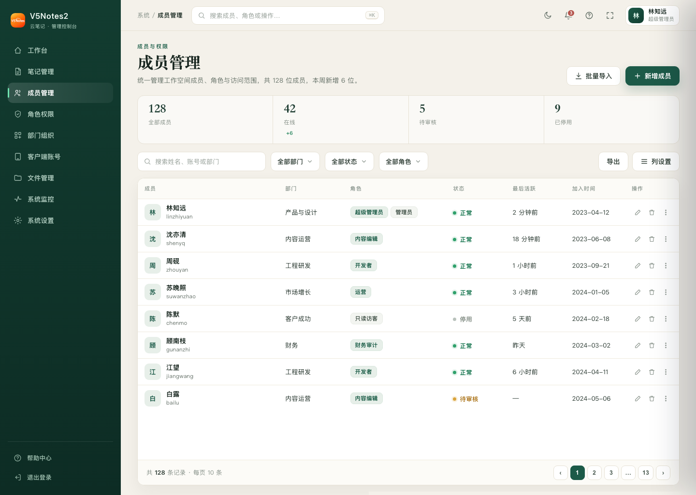
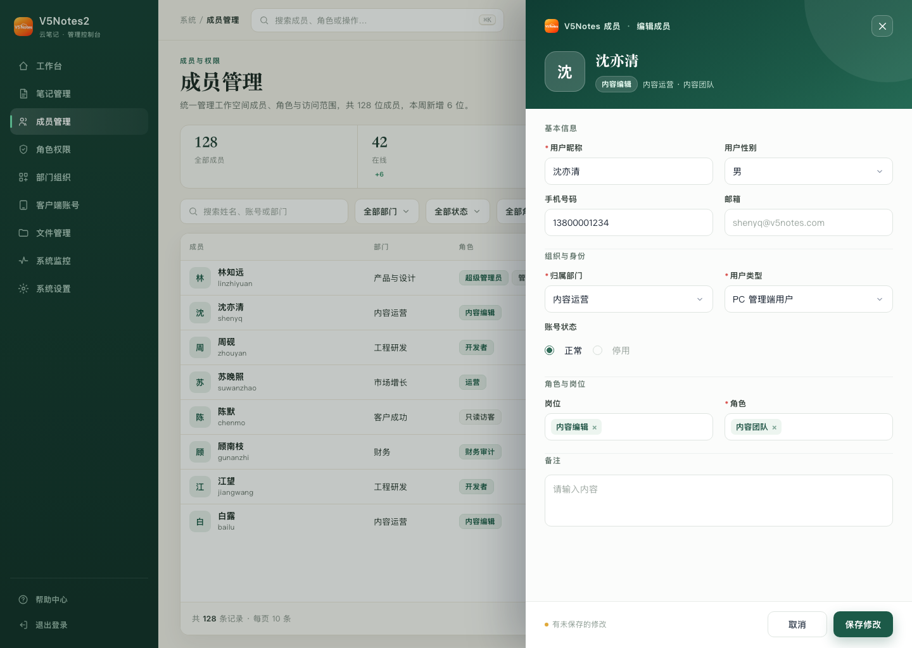
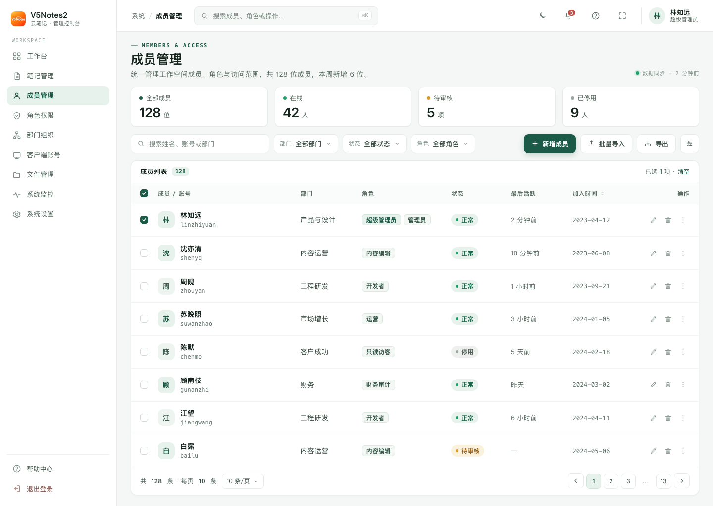
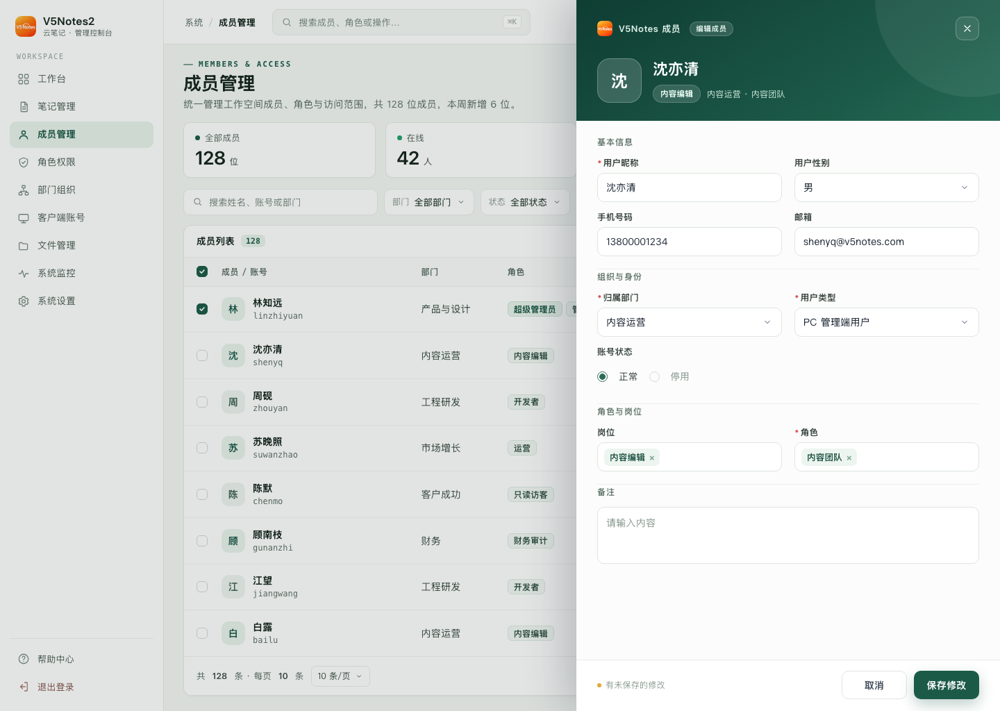
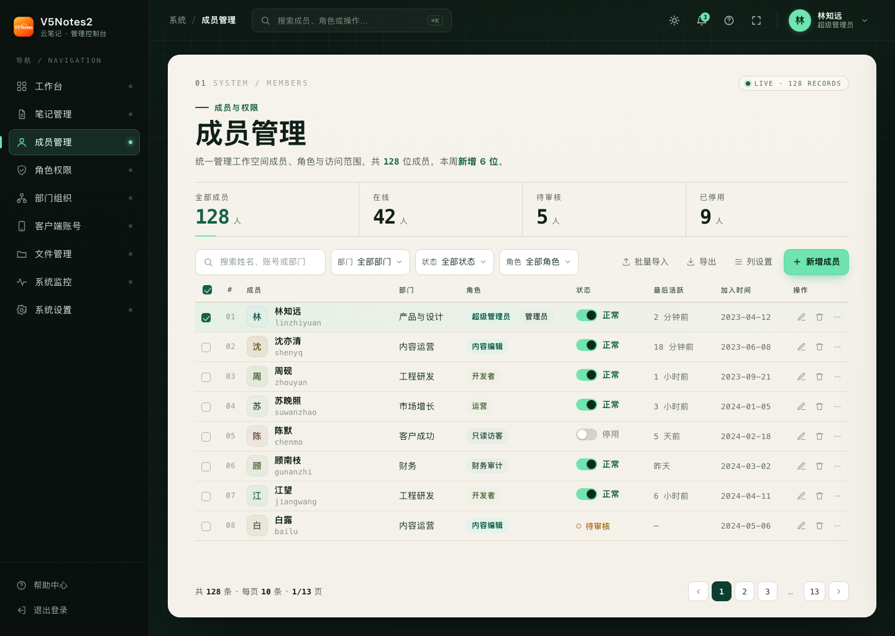
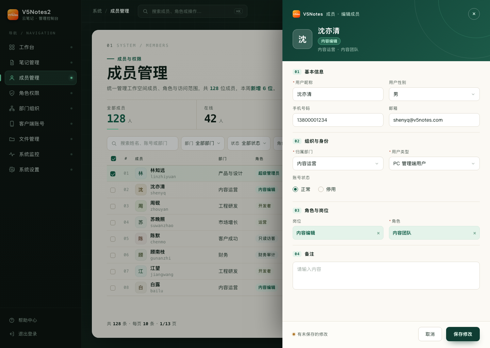
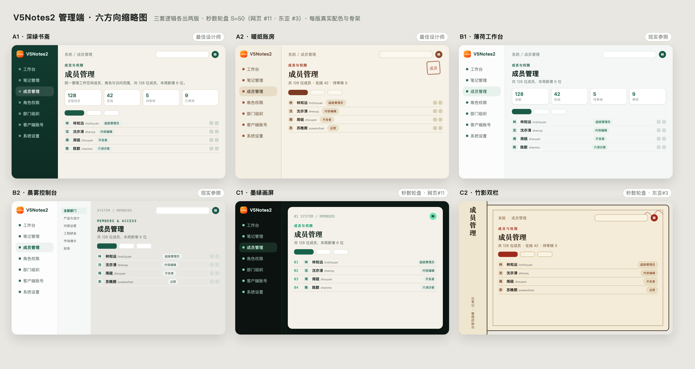

把已批准的「用户新增/编辑侧滑抽屉」（墨绿 × 暖白）扩展成整个后台的统一主题。以下三版内容与尺寸完全一致（1440×1024），只换设计与骨架；每版都附「默认态 + 打开编辑抽屉态」两图。请在三个方向中选定一个（或混搭），我再进入主题令牌与组件落地。
原研哉的留白 × Vignelli 网格；把抽屉的深绿身份头升级为整条左侧导航。暖象牙画布 + 衬线大标题 + 发丝账册表；绿色只做激活/主按钮/状态点。


Linear / Notion 式浅色精密 SaaS：白 + 薄荷墨绿单点，4 个扁平白指标卡，高密度数据表 + 柔和三色状态 pill + 等宽小标签；几乎不装饰，靠密度与对齐取胜。


秒数轮盘·网页 #11 Dark Editorial：深墨绿近黑外壳里浮起一张暖白工作卡，单一荧光青绿只落在激活/主按钮/关键数字；等宽编号串起编辑气质。高对比但不刺眼。


A2 · 暖纸账房（吕敬人书籍设计 × 账册排印）· B2 · 晨雾控制台（Vercel/Resend 发丝线）· C2 · 竹影双栏（民国书衣）。看中哪张我做成完整版。
